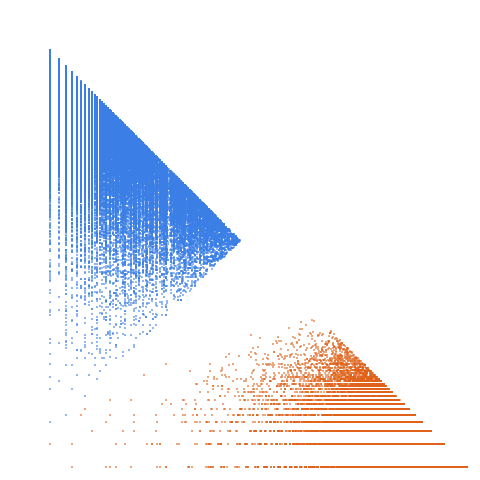

a(n) = Sum_{k=1..n} floor(n/k); also Sum_{k=1..n} d(k), where d = number of divisors (A000005); also number of solutions to x*y = z with 1 <= x,y,z <= n

Open in the 3-D viewerA006218 on the OEIS
| Terms | 100,000 (n = 0 … 99,999) |
|---|---|
| Decomposable (a > 2d) | 99,996 |
| Level class, k > L | 23,409 · 23.41 % |
| Weight class, k ≤ L | 76,587 · 76.59 % |
| Ties, k = L | 23 |
| On the level line L = 1 | 7,854 |
| Forced level, l ≤ d² | 3 |
| Range of a(n) | 0 … 1,166,714 |
| Range of the jump d | 1 … 128 |
| Largest weight k, level L | 1,164,829, 388,858 |
Sum of d(k) for k <= n, ~ n log n; the gap is d(n+1) (1 to 128 here). The level share, 23.41 %, is close to the primes' 23.00 %.
The decomposition
Every term of a strictly increasing sequence is written a(n) = k(n)·L(n) + d(n): the jump d = a(n+1) − a(n), the weight k the least divisor of a − d greater than d, the level L = (a − d)/k. A term decomposes when a > 2d; it is in the level class when k > L and in the weight class when k ≤ L. See decompwlj.com and arXiv:0711.0865.